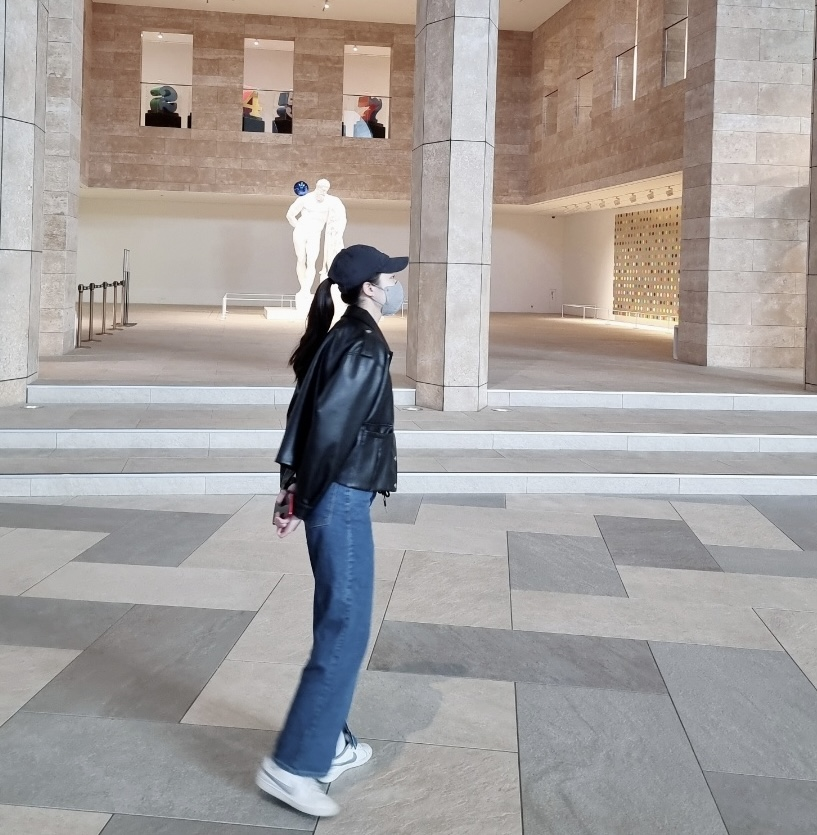

BASIC INFO
문지후
소속
고려대학교 교육학과 20학번
Next x Likelion 10th 멤버
소속
고려대학교 교육학과 20학번
Next x Likelion 10th 멤버
"Brad's Status"
최근에 본 영화 중 가장 인상깊었던 영화! 현대인들이 비교하며 느끼는 열등감을 가장 솔직하고 현실적으로 담았다. 하나의 테마 음악이 주인공의 독백과 함께 이야기를 이끌어서
몰입하기도 좋았다.

"Julie & Julia"
멋사에 지원할 수 있는 용기를 준 영화! 일상에서의 활력, 스스로 만들어가는 동력을
'요리'라는 귀여운 주제로 다루었다. 유럽의 아름다운 풍경을 볼 수 있는 것도 매력 요소.

"Notting Hill"
Don't forget. I'm just a girl standing in front of a boy asking him to love her. 명대사가
자꾸 맴도는 영화. 로맨스 영화 중 제일 아끼는 작품.

사람들과 어울릴 땐 심플한 것을 좋아합니다. 그 순간의 분위기나 에너지에 빠질 때, 사람들의 각기 다른 매력에 빠질 때가 심플하고 좋습니다.
혼자 있을 땐 복잡한 것을 좋아합니다. 하나의 생각에 종종 깊게 빠질 때가 있는데 나름 이게 저의 일상에 활력이 되는 습관입니다. 음악을 들을 때나,
책을 읽을 때나 어딘가를 갔을 때 더 풍부하게 느낄 수 있어서요!
올해는 저에게도, 다른 분들에게도 조금씩 활력을 되찾아갈 수 있는, 놓쳤던 것들에도
다시 새로운 의미를 선물하고 시작할 수 있는 시간이 되기를 바랍니다.